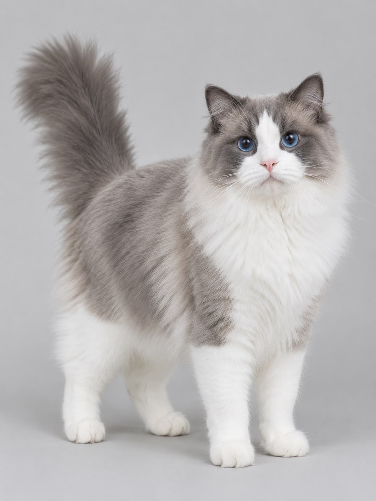
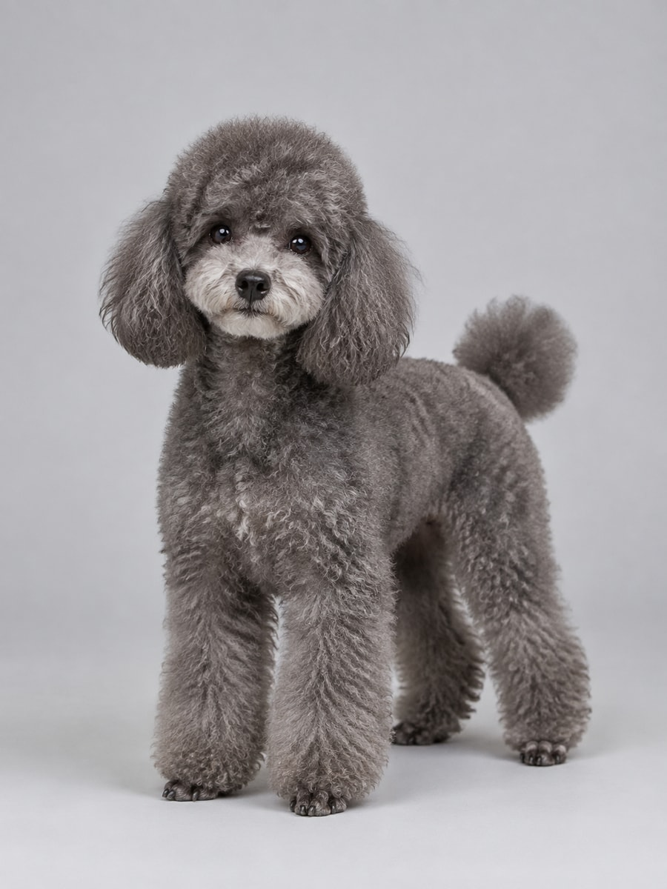
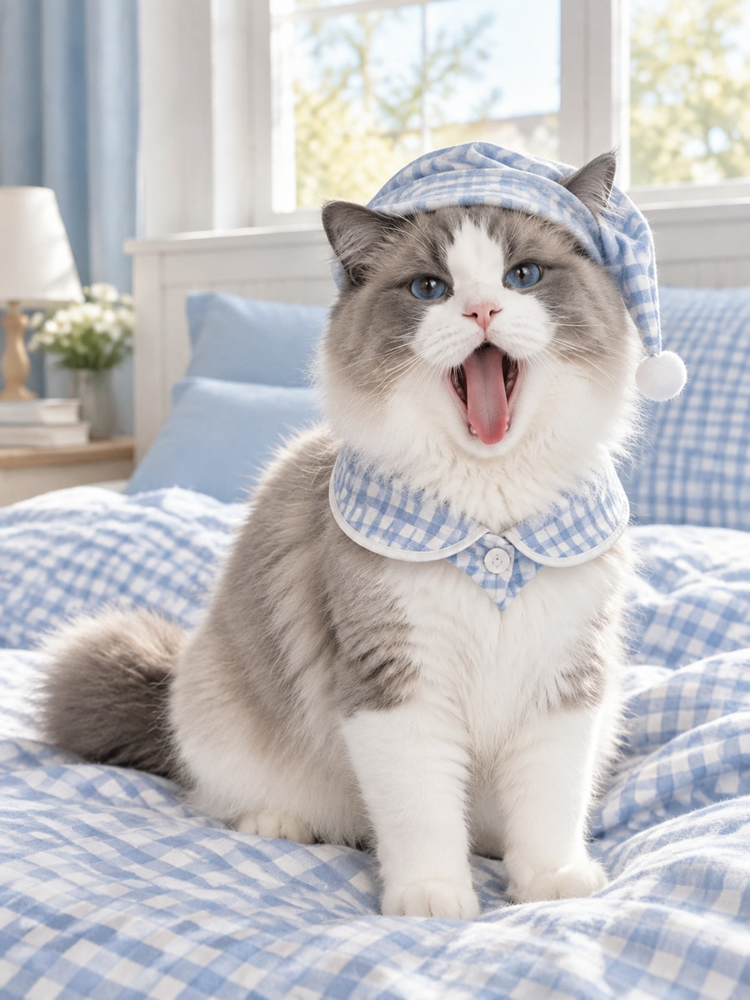
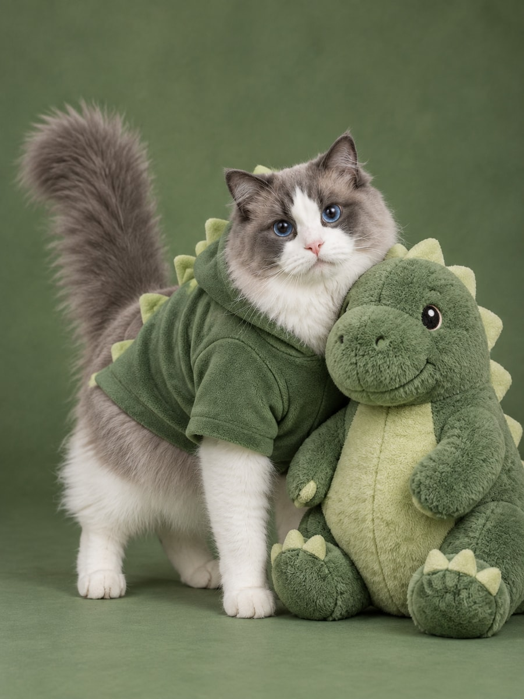
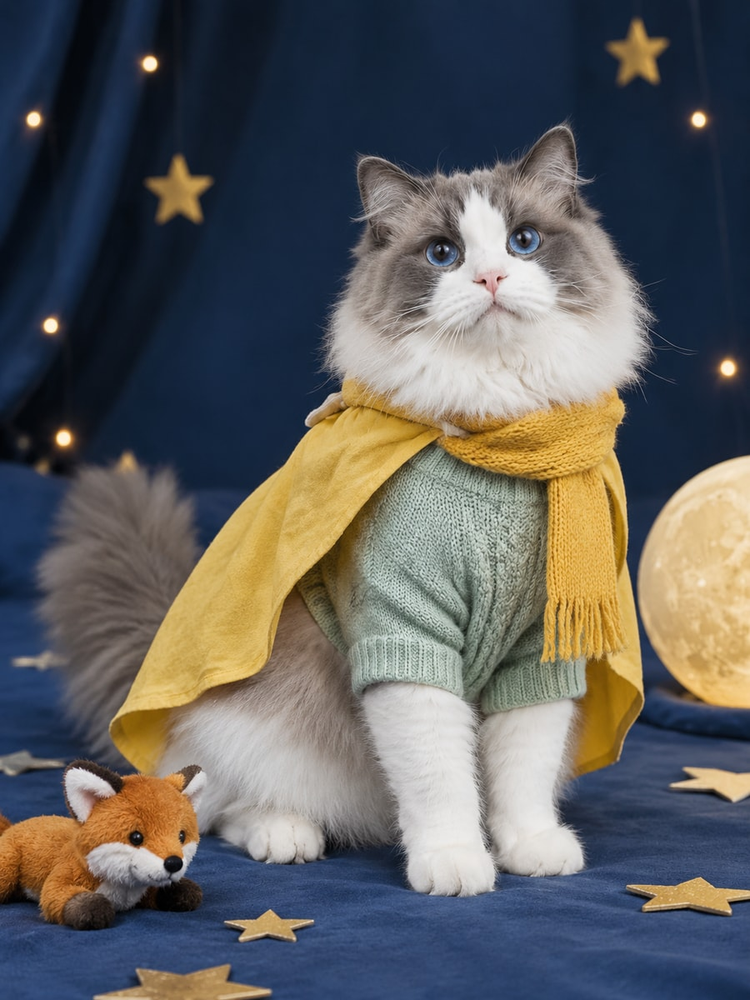
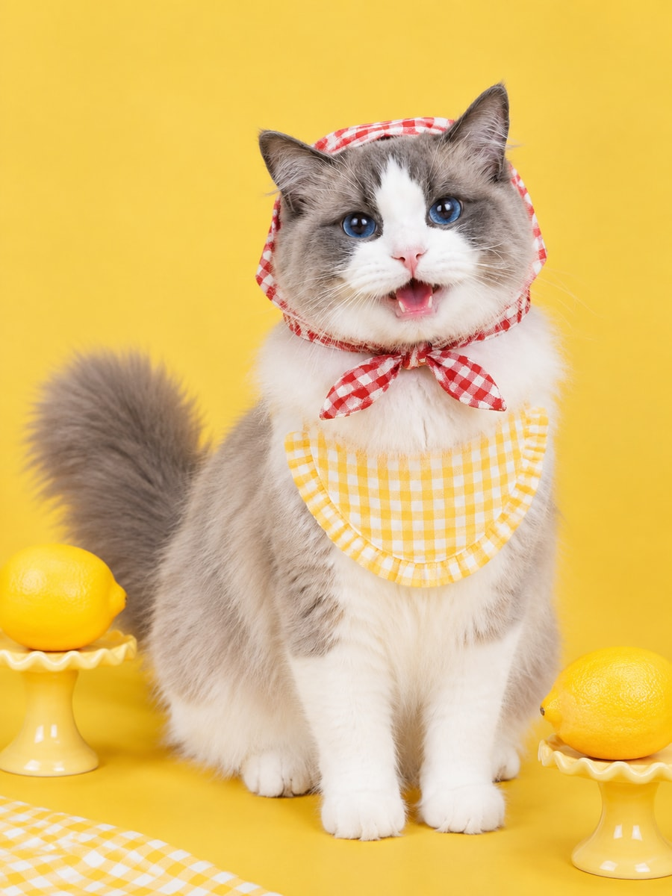
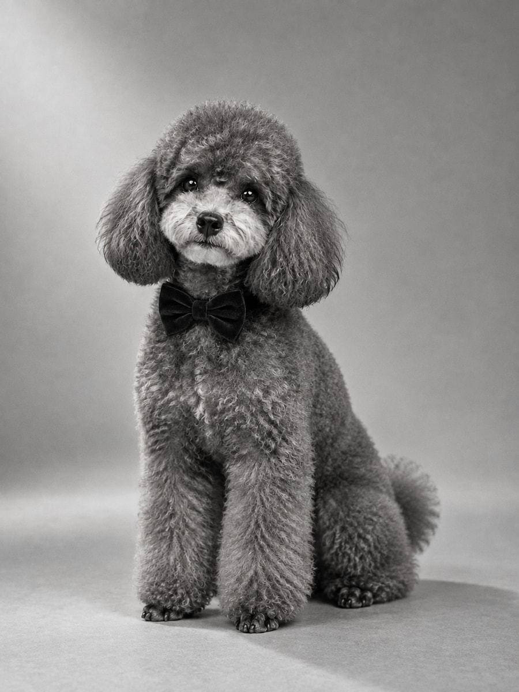
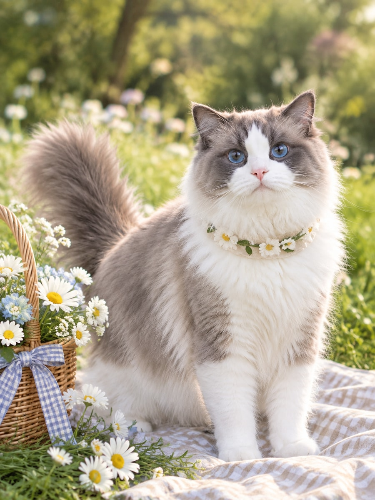
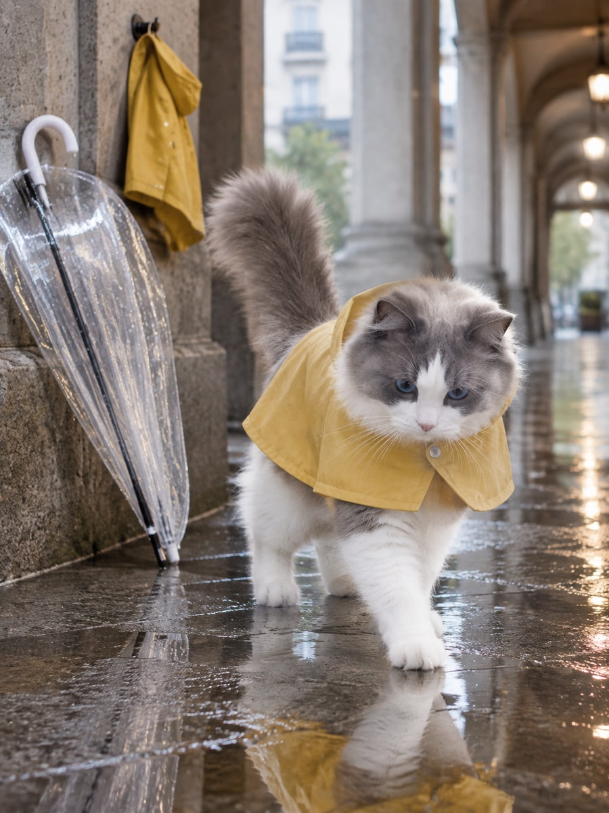
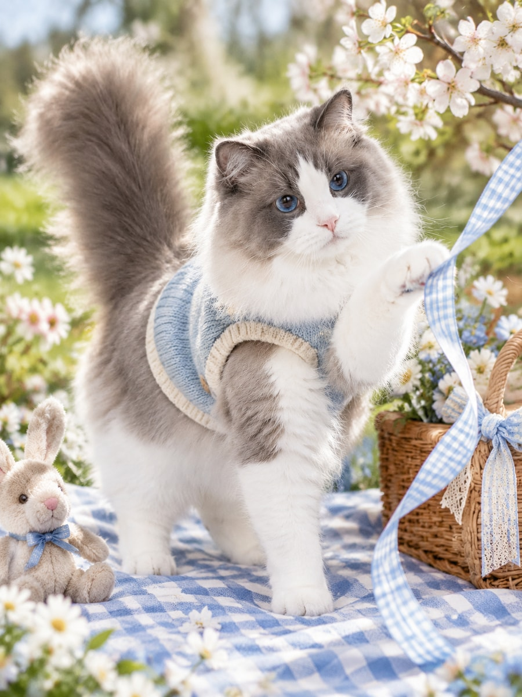

玩法入口 · 16:10
身份参考 · 不进入公共样片存储

蓝双色布偶猫 · 已通过白色倒 V 面纹 · 粉色鼻头 · 蓝眼睛 · 白色四爪提示词与哈希

灰色泰迪 · 已通过灰色卷毛 · 浅色口鼻 · 垂耳 · 深色眼睛提示词与哈希
宠物艺术写真 · 12 套真实摄影造型 · 3:4 · 已通过

蓝格睡衣卧室床上打哈欠 · 慵懒放松提示词与哈希

绿幕恐龙朋友抱住玩偶 · 天真好奇提示词与哈希
薄荷领带影棚端坐回望 · 自信从容提示词与哈希

星夜小王子披风坐定 · 安静幻想提示词与哈希

柠檬黄日记柠檬入镜 · 俏皮大笑提示词与哈希
复古摄影师相机在旁 · 慢慢观察提示词与哈希
蓝调杂志封面耳机与领带 · 俏皮凝视提示词与哈希

黑白经典肖像灰色泰迪 · 黑白影棚 · 温柔凝视提示词与哈希
玫红眼镜写真衬衫领带 · 轻松回眸提示词与哈希

草地花环午后花束相伴 · 温柔凝视提示词与哈希

街头雨衣雨后水洼 · 小心探步提示词与哈希

软玩具野餐野餐垫上 · 伸爪拨带提示词与哈希
设计概念图 · 已通过 · 不进入公共样片
本页 24 张图片于 2026-09-26 获用户审核通过。运行时图位、历史对象键与后续验收状态以图位台账为准；宠物人化 V2 不在本批。